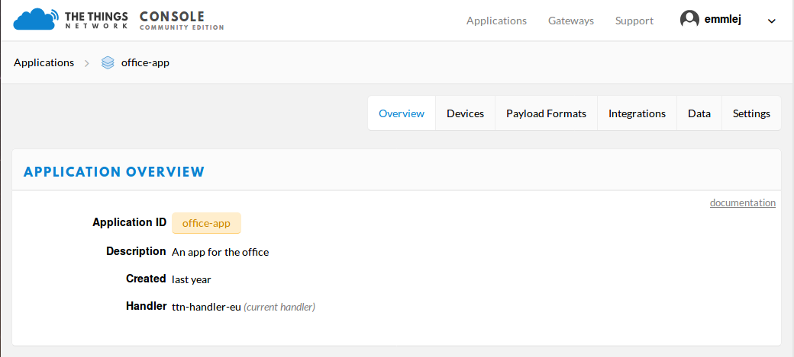
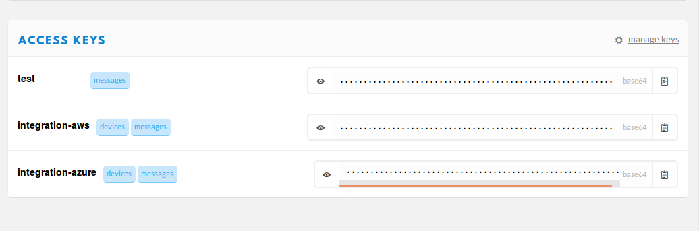
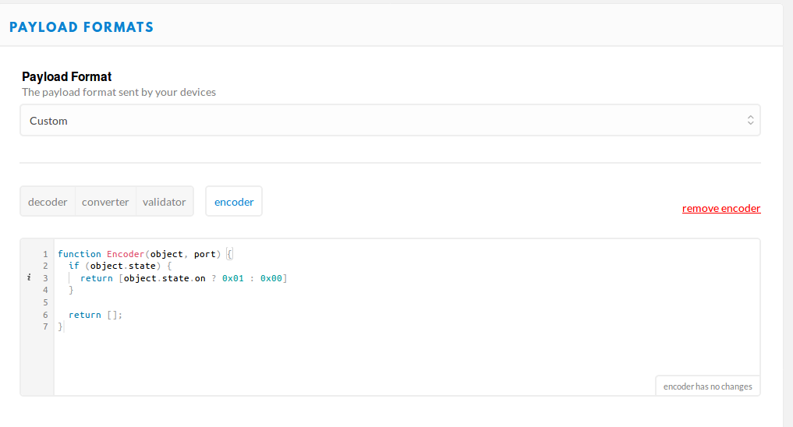

API Reference
Outdated: this section documents The Things Network V2, which is no longer maintained. See the documentation for The Things Stack V3, or browse the V2 docs index.
This package provides you an easy way to exchange traffic with The Things Network via MQTT and manage your applications.
MQTTClient #
The class constructor can be called following this scheme:
MQTTClient(app_id, access_key, mqtt_address="", discovery_address="discovery.thethings.network:1900")
-
app_id: string this the name given to the application when it was created.
-
access_key: string this can be found at the bottom of the application page under ACCESS KEYS.
-
mqtt_address: string this is the address of the handler to which the application was registered, in the{hostname}:{port}format. -
discovery_address: string this is the address of the discovery server to use in order to find back the address of the MQTT handler, in the{hostname}:{port}format.If the
mqtt_addressis set, thediscovery_addressdoesn’t need to be set as it is only used to retrieve themqtt_addressfrom the discovery server. The constructor returns an MQTTClient object set up with the application informations, ready to be connected to The Things Network.
connect #
Connects and starts the client in the background. This function also re-establishes the client’s connection in case it was closed.
client.connect()
close #
Disconnects and stops the client from which the method is called.
client.close()
Using Callbacks #
The callback functions are functions which are executed when a trigger event happens.
set_uplink_callback #
Add a callback function, to be called when an uplink message is received.
client.set_uplink_callback(uplink_callback)
uplink_callback #
The callback function must be declared in the script following this structure:
uplink_callback(msg, client)msg: UplinkMessage object the message received by the client.client: MQTTClient object the client from which the callback is executed.
set_connect_callback #
Add a connection callback function to be executed when the client connects to the broker.
client.set_connect_callback(connect_callback)
connect_callback #
connect_callback(res, client): the function which will be executed on connection to the broker.res: boolean the result of the connection. If it’s true, the connection succeeded. If not, it means the connection failed.client: MQTTClient object the TTN client from which the callback is called.
set_downlink_callback #
Add a downlink callback function, with actions to execute when a downlink message is sent.
client.set_downlink_callback(downlinkCallback)
downlink_callback #
downlink_callback(mid, client): the function which will be a new publish behavior for our MQTT client.mid: int this is the message ID for the downlink request. It can be used to track the request.client: MQTTClient object the TTN client from which the callback is called.
set_close_callback #
Add a callback to be executed when the connection to the TTN broker is closed.
client.set_close_callback(close_callback)
close_callback #
close_callback(res, client): the function which will be executed when the connection is closed.res: boolean the result of the disconnection. If it’s true, it went all as expected. If not, it means the disconnection was unexpected.client: MQTTClient object the TTN client from which we call the callback.
send #
Sends a downlink to the device.
client.send(dev_id, payload, port=1, conf=False, sched="replace")
dev_id: string the ID of the device which will receive the message.payload: the payload of the message to be published to the broker. It can be an hexadecimal string, a base64 string likeAQ==(this will send the raw payload01to your device) or a dictionary of JSON nature. Here is an example of a dictionary argument that could be passed to the method:
{ "led_state": "on", "counter": 1 }
In case it’s a dictionary with fields, please make sure the encoder function (Payload Formats section) of the application is set to make sense of the informations transmitted in each field.

port: int the port of the device to which the message will be sent.conf: boolean this boolean indicates if you wish to receive a confirmation after sending the downlink message.sched: string this string provides the type of schedule on which the message should be sent. It can take the following values:first,last,replace.
UplinkMessage #
This type of object is constructed dynamically from the message received by the client, so this means some attributes can change from one message to another. Here are some constant attributes usually found in UplinkMessage objects:
app_id: the application ID to which the device is registereddev_id: the ID of the deviceport: the port number on which the message was sentpayload_raw: a buffer which contains the payload in hexadecimalmetadata: this field is another object which contains all the metadata of the message. Such as: the date, the frequency, the data rate and the list of gateways.
ApplicationClient #
The class constructor can be called following this scheme:
ApplicationClient(app_id, access_key, handler_address="", cert_content="", discovery_address="discovery.thethings.network:1900")
app_id: string this the name given to the application when it was created.
access_key: string this can be found at the bottom of the application page under ACCESS KEYS. You will need a key allowing you to change the settings if you wish to update your application.handler_address: string this is the address of the handler to which the application was registered, in the{hostname}:{port}format. Example:handler.eu.thethings.network:1904.cert_content: string this is the content of the certificate used to connect in a secure way to the handler. Here is a certificate example:
-----BEGIN CERTIFICATE-----
MIIBmjCCAUCgAwIBAgIRANKKhUVFRXhyx0gCX2h7EFwwCgYIKoZIzj0EAwIwHTEb
MBkGA1UEChMSVGhlIFRoaW5ncyBOZXR3b3JrMB4XDTE3MDgwMTA4MzQxMloXDTE4
MDgwMTA4MzQxMlowHTEbMBkGA1UEChMSVGhlIFRoaW5ncyBOZXR3b3JrMFkwEwYH
KoZIzj0CAQYIKoZIzj0DAQcDQgAEiXbWvyYjOMP4ebTYtVvdIsBwS+U3laWltR7V
ox4+kQWcGLLEg+suI9SRZyKK+frhw9JPKbVNIgEv/S50YKfMEaNhMF8wDgYDVR0P
AQH/BAQDAgKkMB0GA1UdJQQWMBQGCCsGAQUFBwMBBggrBgEFBQcDAjAPBgNVHRMB
Af8EBTADAQH/MB0GA1UdEQQWMBSCB2hhbmRsZXKCCWxvY2FsaG9zdDAKBggqhkjO
PQQDAgNIADBFAiEA+vajlz7HDZ7x6KKi/uMlrwCePEcchZRYJPc/6kPyYogCIFSy
etQ54MyIOWtwYlxG+blnxT4PWCgas5rPiaK6VP/Z
-----END CERTIFICATE-----
-
discovery_address: string this is the address of the discovery server to use in order to find back the address of the handler to which the application in registered, in the{hostname}:{port}format. Example:discovery.thethings.network:1900.The constructor returns an ApplicationClient object set up with the application informations, ready to get the application registered on The Things Network.
get #
Gives back the Application.
client.get()
set_payload_format #
Sets the payload format of the application.
client.set_payload_format(payload_format)
- payload_format: string the new payload format.
Example:
custom
set_custom_payload_functions #
Sets the payload functions of the application.
client.set_custom_payload_functions(encoder="", decoder="", validator="", converter="")
-
decoder: string Javascript decoder function. -
encoder: string Javascript encoder function. -
validator: string Javascript validator function. -
converter: string Javascript converter function.Arguments left empty are ignored and won’t be updated. Example:
decoder_fn = """function Decoder(payload) {
return { led: 1 };
}"""
client.set_custom_payload_functions(decoder=decoder_fn)
unregister #
Unregisters the application.
client.unregister()
register_device #
Registers a new device to the application.
client.register_device(dev_id, device)
dev_id: string the id of the device to be registered.device:
devicetest = {
"description": "Description",
"appEui": "0011223344556677",
"devEui": "9988776655443322",
"devAddr": "11223344", # remove for OTAA
"nwkSKey": binascii.b2a_hex(os.urandom(16)).upper(), # remove for OTAA
"appSKey": binascii.b2a_hex(os.urandom(16)).upper(), # remove for OTAA
"appKey": binascii.b2a_hex(os.urandom(16)).upper(), # remove for ABP
"fCntUp": 10,
"fCntDown": 11,
"latitude": 100,
"longitude": 200,
"altitude": 300,
"attributes": {
"foo": "bar",
},
"disableFCntCheck": True,
"uses32BitFCnt": True,
}
device #
Gives back the Device object of the given id.
client.device(dev_id)
dev_id: string the id of the device.
devices #
Gives back the list of all the devices registered to the application.
client.devices()
update_device #
Updates an already existing device of the application.
client.update_device(dev_id, updates)
dev_id: string the id of the device to be updated.updates: dictionary a dictionary with the fields to be updated in the device.
delete_device #
Deletes the device with the given id.
client.delete_device(dev_id)
dev_id: string the id of the device to be deleted.
Device #
This objet is returned by the method device() of the ApplicationClient class. Here are its attributes:
app_id: stringdev_id: stringlatitude: floatlongitude: floataltitude: floatdescription: stringattributes: dictionarylorawan_device: dictionaryapp_eui: string 8 bytes in hexadecimaldev_eui: string 8 bytes in hexadecimaldev_addr: string 4 bytes in hexadecimalnwk_s_key: string 16 bytes in hexadecimalapp_s_key: string 16 bytes in hexadecimalapp_key: string 16 bytes in hexadecimalf_cnt_up: intf_cnt_down: intdisable_f_cnt_check: booleanuses32_bit_f_cnt: boolean
Application #
This object is returned by the method get() of the ApplicationClient class. Here are its attributes:
app_id: stringpayload_format: stringdecoder: stringencoder: stringconverter: stringvalidator: stringregister_on_join_access_key: string
HandlerClient #
The class constructor can be called following this scheme:
HandlerClient(app_id, access_key, discovery_address="discovery.thethings.network:1900", cert_path="")
app_id: string this the name given to the application when it was created.
access_key: string this can be found at the bottom of the application page under ACCESS KEYS. The key needs thesettingsauthorization.discovery_address: string this is the address of the discovery server to use in order to find back the address of the handler to which the application in registered, in the{hostname}:{port}format.cert_path: string this is the path to the certificate used to connect in a secure way to the discovery server.
data #
Creates an MQTTClient object.
handler.data()
Returns an MQTTClient object.
application #
Creates an ApplicationClient object
handler.application()
Returns an ApplicationClient object.
Troubleshooting #
Errors can happen on connection or on some ApplicationClient’s methods call, for different reasons:
- Wrong
app_id,access_keyormqtt_addresswere provided to the constructor. - The machine may not have access to the network/The MQTT server could be down/Firewall restrictions could prevent connection.
- The client process doesn’t have system capabilities to open a socket
- The MQTT server uses MQTTS, but the client won’t accept the TLS certificate.
- The Application client is not able to get the application or a device. Errors could also happen when closing connection, in case the disconnection is unexpected. This errors are the most common ones, there are also edges cases not mentioned in this section.